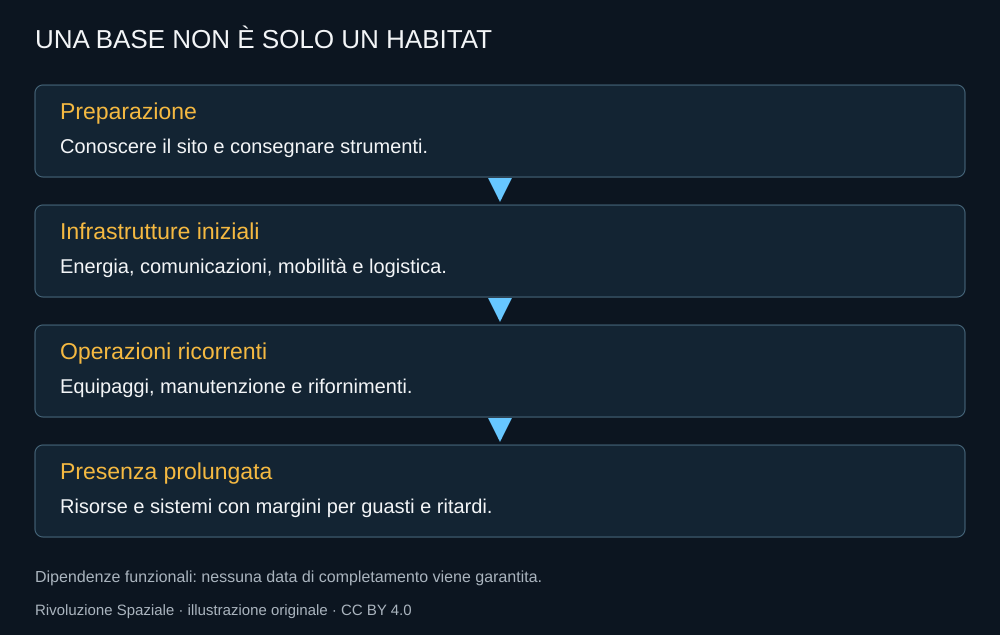

Una base non nasce quando viene posato un modulo abitabile. Quel modulo deve avere energia, collegamenti e risorse; deve poter ricevere interventi e sostenere persone anche quando qualcosa ritarda. Il ritorno periodico di astronauti e una presenza continua sono due livelli diversi di capacità.
La scelta del 2026
La guida NASA della base lunare organizza lo sviluppo per fasi e priorità. L’idea è costruire capacità attraverso missioni e dimostrazioni, poi aggiungere infrastrutture e logistica. Non è un certificato di disponibilità di ogni apparato indicato.

Energia prima dei comfort
Una base deve far funzionare sistemi anche quando non c’è una buona illuminazione. La scelta fra fonti e accumulo dipende da sito, durata e carichi. Un pannello grande non basta se la missione non può superare l’intervallo in cui la fonte non produce.
La gestione termica è parte dell’energia. Gli apparati devono restare entro condizioni compatibili con l’uso e la conservazione. Risparmiare elettricità spegnendo una funzione può diventare costoso se il componente non sopravvive alla temperatura.
Muoversi cambia la missione
Un rover estende la distanza raggiungibile e la massa di strumenti o campioni trasportabili. Una versione pressurizzata può offrire un ambiente diverso dalla permanenza continua in tuta. Ogni scelta introduce però risorse, manutenzione e un piano per un guasto lontano dall’habitat.
La mobilità non si misura soltanto nella distanza massima. Conta il tempo disponibile, l’energia e la possibilità di rientrare. Per un veicolo robotico, autonomia e collegamento con la Terra hanno un significato diverso rispetto a un rover abitato.
L’habitat vive di logistica
Una permanenza lunga richiede scorte, ricambi e strumenti. Il progetto deve decidere che cosa riparare e che cosa sostituire. Portare ogni possibile ricambio aumenta massa e costo; portarne troppo pochi rende fragile la missione.
La produzione locale di alcune risorse può aiutare, ma non può essere presunta. Un impianto va consegnato, attivato, verificato e mantenuto. La sua capacità reale deve precedere la decisione di affidargli una funzione essenziale per l’equipaggio.
I contributi internazionali diventano strutture
Il percorso NASA comprende prospettive per mobilità, habitat e logistica con partner internazionali. Il ruolo italiano dell’habitat multipurpose viene inserito nella visione della presenza prolungata. Sono impegni e sviluppi da seguire, non edifici già occupati sulla Luna.
Una base composta da apparati diversi ha bisogno di standard di collegamento e procedure comuni. Se ogni nuova consegna richiede una soluzione speciale, la crescita diventa difficile. La modularità ha valore quando produce compatibilità verificabile.
Restare è un verbo operativo
La differenza rispetto all’escursione è la ripetizione. Le risorse arrivano, gli apparati consumano vita utile, le persone cambiano e qualcuno deve conservare una conoscenza del sistema. La base diventa una continuità di attività, non un oggetto immobile.
Il sogno di restare merita quindi un’attenzione concreta. È meno immediato di un lancio e potrebbe essere il cambiamento più profondo dell’intero programma.
Fonti pubbliche e tracce
- NASA, Moon Base Architecture User’s Guide, aprile 2026. Guida di architettura e priorità: progetto, non base completata.
- NASA, iniziative nazionali e nuova base lunare, 24 marzo 2026. Gateway messo in pausa nella forma attuale; fasi della base lunare e obiettivi di frequenza.
- NASA Science, Lunar Ice Deposits are Widespread, 3 ottobre 2024. Indizi e distribuzione delle risorse; non impianti di estrazione operativi.